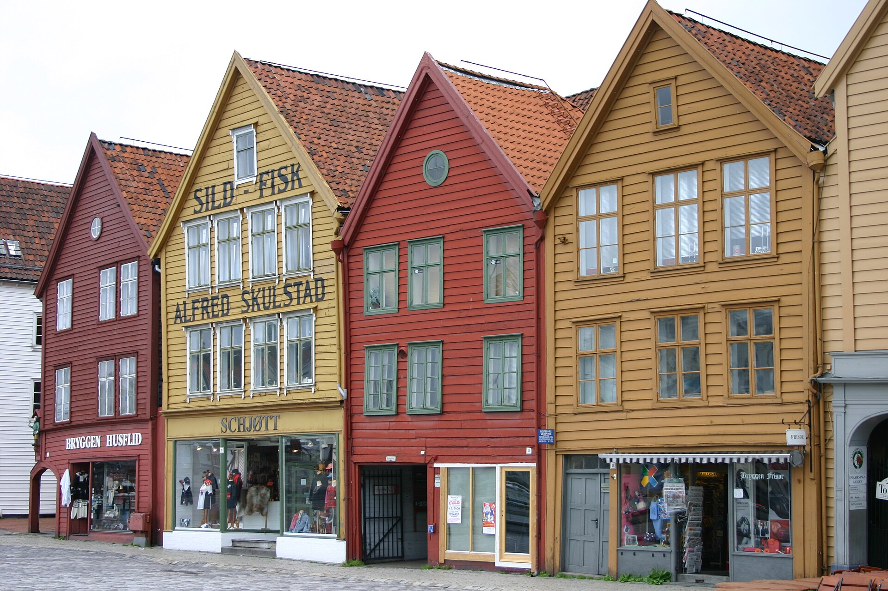

Bergen and the Fjords · 6-day family itinerary
Two calm bases, a protected Bergen–Flåm transfer and enough space for weather, walking energy and a real family holiday.

Checked before you commit
This is a route design, not a live booking result. It assumes two adults and two school-age children, moderate pace, mid-range preferences and luggage suitable for rail and boat transfers.
Planning boundary: dates are illustrative. No availability, fare, reservation or live operating status is claimed.
Why this route works
Bergen gives the family a compact first base and a soft landing. Flåm adds the fjord landscape without turning every night into a pack-and-move day. Keep the longest movement visible, protect a recovery window after arrival, and let weather decide whether the fjord day is by boat, rail or a shorter local alternative.
Day 1 — Arrive in Bergen, then keep the first evening local
After airport transfer and check-in, walk the Bryggen waterfront and stop around Vågen rather than crossing the city for a second attraction. Keep dinner near the base so jet lag and luggage do not become a second transfer.
Fallback: If arrival is late or wet, use a short harbour walk and move Bryggen orientation to Day 2; confirm current transport and access before departure.
Day 2 — Bergen history in one walkable cluster
Use Bryggen, the Hanseatic Museum area and the harbour as the morning spine, then protect lunch and a rest window before choosing either Fløibanen/Mount Fløyen or a shorter neighbourhood walk. The decision keeps one elevation change from taking over the whole day.
Fallback: In poor weather, shorten the viewpoint plan and keep the museum/harbour sequence; check ticketing, access and operating hours live.
Day 3 — Bergen to Flåm as the scenic transfer day
Treat the Bergen–Flåm rail/fjord journey as the anchor, with luggage packed the night before and no major Flåm activity promised on arrival. Use the rail and boat combination only after checking the current Vy/Flåmsbana and ferry sequence, connection margin and seasonal operation.
Fallback: If a connection is unavailable or weather makes the water leg fragile, keep the day as a direct rail/road transfer and move the scenic viewpoint to Day 4; never assume a connection is guaranteed.
Day 4 — Flåm valley and one manageable fjord highlight
Start around Flåm harbour, then choose one named highlight: the Flåm Railway viewpoint experience or a short, family-suitable valley walk near the base. Keep the afternoon open for a slow meal and the Aurlandsfjord setting instead of adding a second long transfer.
Fallback: If rain, wind or tired legs change the day, keep the harbour and railway interpretation, drop the walk and confirm any access restrictions locally.
Day 5 — Aurland viewpoint choice with a protected return
Use the morning for Stegastein viewpoint only if the current road, shuttle/taxi and weather conditions suit the party; otherwise keep the day at sea level around Flåm and Aurland village. Return to the same base before dinner so the family is not carrying a late cross-region decision.
Fallback: Replace the viewpoint with a shorter fjord-side outing when visibility, road conditions or motion sensitivity make the climb a poor fit; check live transport and weather.
Day 6 — Return to Bergen with departure buffer
Take the confirmed return route to Bergen with luggage ready and a deliberate buffer before the onward flight or final hotel night. If timing allows, use one final harbour meal rather than adding a distant attraction.
Fallback: If the return connection shifts, preserve the transfer and remove sightseeing first; confirm airport access, check-in timing and current disruption information.
Planning notes
Keep the route editable. Recheck current rail and ferry schedules, tickets, opening hours, weather, accessibility, baggage rules, prices, cancellation terms and supplier availability at decision time. Alfred can help turn the travelling party, dates, pace, budget and interests into an editable itinerary; it does not guarantee live facts or complete a booking.
Plan a trip
Start with your people, dates and pace, then review the editable plan before booking.
Plan a trip